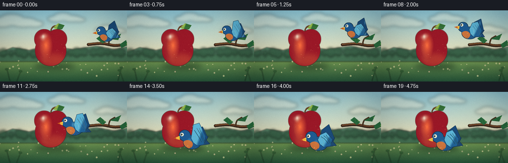
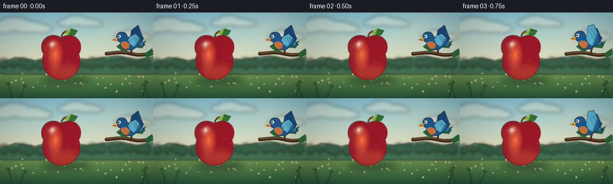

CODING AGENTS AS PIXEL WORLD MODELS
traex/DeepSeek-V4.1-Flash · dynamic_spatial_relationship_0040
点击播放 · 原生 RGB 像素
逐轮保存的候选
回放视频、检查图与代码变化。
每份候选均可单独播放。实际图片检查记录在下方工具轨迹中。
候选 01播放与检查图
点击播放 · 原生 RGB 像素


展开代码变化
--- 上一保存版本
+++ 本次保存版本
@@ -0,0 +1,767 @@
+from __future__ import annotations
+
+import math
+from pathlib import Path
+
+import cv2
+import numpy as np
+from PIL import Image, ImageChops, ImageDraw, ImageFilter
+
+import artifact_io
+
+
+ROOT = Path(__file__).resolve().parent
+WIDTH, HEIGHT = 256, 144
+FRAMES = 20
+FPS = 4.0
+SS = 4
+W, H = WIDTH * SS, HEIGHT * SS
+
+
+def clamp(value, lo=0.0, hi=1.0):
+ return max(lo, min(hi, value))
+
+
+def smoothstep(value):
+ value = clamp(value)
+ return value * value * (3.0 - 2.0 * value)
+
+
+def mix_color(a, b, t):
+ return tuple(int(round(a[i] + (b[i] - a[i]) * t)) for i in range(3))
+
+
+def vertical_gradient(top, bottom, height=H, width=W):
+ y = np.linspace(0.0, 1.0, height, dtype=np.float32)[:, None, None]
+ a = np.asarray(top, dtype=np.float32)[None, None, :]
+ b = np.asarray(bottom, dtype=np.float32)[None, None, :]
+ row = a + (b - a) * y
+ return np.repeat(row, width, axis=1).astype(np.uint8)
+
+
+def radial_rgb(shape, center, radius, inner, outer, gamma=1.0):
+ h, w = shape
+ yy, xx = np.mgrid[0:h, 0:w].astype(np.float32)
+ distance = np.sqrt((xx - center[0]) ** 2 + (yy - center[1]) ** 2) / max(radius, 1.0)
+ t = np.clip(distance, 0.0, 1.0) ** gamma
+ a = np.asarray(inner, dtype=np.float32)
+ b = np.asarray(outer, dtype=np.float32)
+ return (a[None, None, :] + (b - a)[None, None, :] * t[..., None]).astype(np.uint8)
+
+
+def linear_rgb(shape, start, end, inner, outer):
+ h, w = shape
+ yy, xx = np.mgrid[0:h, 0:w].astype(np.float32)
+ dx, dy = end[0] - start[0], end[1] - start[1]
+ denom = max(dx * dx + dy * dy, 1.0)
+ t = np.clip(((xx - start[0]) * dx + (yy - start[1]) * dy) / denom, 0.0, 1.0)
+ a = np.asarray(inner, dtype=np.float32)
+ b = np.asarray(outer, dtype=np.float32)
+ return (a[None, None, :] + (b - a)[None, None, :] * t[..., None]).astype(np.uint8)
+
+
+def blank_mask():
+ return Image.new("L", (W, H), 0)
+
+
+def ellipse_mask(center, rx, ry, blur=0):
+ mask = blank_mask()
+ draw = ImageDraw.Draw(mask)
+ draw.ellipse(
+ (
+ int(center[0] - rx),
+ int(center[1] - ry),
+ int(center[0] + rx),
+ int(center[1] + ry),
+ ),
+ fill=255,
+ )
+ if blur:
+ mask = mask.filter(ImageFilter.GaussianBlur(blur))
+ return mask
+
+
+def polygon_mask(points, blur=0):
+ mask = blank_mask()
+ ImageDraw.Draw(mask).polygon([(int(x), int(y)) for x, y in points], fill=255)
+ if blur:
+ mask = mask.filter(ImageFilter.GaussianBlur(blur))
+ return mask
+
+
+def union_masks(*masks):
+ result = masks[0]
+ for mask in masks[1:]:
+ result = ImageChops.lighter(result, mask)
+ return result
+
+
+def paint_mask(layer, mask, rgb, opacity=255):
+ box = mask.getbbox()
+ if box is None:
+ return
+ crop = mask.crop(box)
+ w, h = crop.size
+ if isinstance(rgb, np.ndarray):
+ colors = rgb
+ if colors.shape[:2] != (h, w):
+ colors = np.asarray(Image.fromarray(colors).resize((w, h), Image.Resampling.BILINEAR))
+ else:
+ colors = np.empty((h, w, 3), dtype=np.uint8)
+ colors[:] = rgb
+ alpha = np.asarray(crop, dtype=np.uint16) * opacity // 255
+ patch = np.empty((h, w, 4), dtype=np.uint8)
+ patch[:, :, :3] = colors
+ patch[:, :, 3] = alpha.astype(np.uint8)
+ layer.alpha_composite(Image.fromarray(patch), dest=(box[0], box[1]))
+ return
+ """
+<ï½ï½beginâofâsentenceï½ï½>以 = np.empty((h, w, 4), dtype=np.uint8)
+以[:, :, :3] = colors
+以[:, :, 3] = alpha.astype(np.uint8)
+ layer.alpha_composite(Image.fromarray(以), dest=(box[0], box[1]))
+
+
+ """
+
+
+def add_shadow(layer, center, rx, ry, color=(23, 49, 32), opacity=90, blur=5):
+ mask = ellipse_mask(center, rx, ry, blur=blur)
+ paint_mask(layer, mask, color, opacity)
+
+
+def draw_curve(draw, points, fill, width):
+ draw.line([(int(x), int(y)) for x, y in points], fill=fill, width=max(1, int(width)), joint="curve")
+ radius = max(1, int(width / 2))
+ for x, y in (points[0], points[-1]):
+ draw.ellipse((x - radius, y - radius, x + radius, y + radius), fill=fill)
+
+
+def catmull_rom(points, samples_per_segment=12):
+ pts = [points[0]] + list(points) + [points[-1]]
+ result = []
+ for index in range(1, len(pts) - 2):
+ p0, p1, p2, p3 = pts[index - 1 : index + 3]
+ for step in range(samples_per_segment):
+ t = step / samples_per_segment
+ t2, t3 = t * t, t * t * t
+ x = 0.5 * (
+ 2 * p1[0]
+ + (-p0[0] + p2[0]) * t
+ + (2 * p0[0] - 5 * p1[0] + 4 * p2[0] - p3[0]) * t2
+ + (-p0[0] + 3 * p1[0] - 3 * p2[0] + p3[0]) * t3
+ )
+ y = 0.5 * (
+ 2 * p1[1]
+ + (-p0[1] + p2[1]) * t
+ + (2 * p0[1] - 5 * p1[1] + 4 * p2[1] - p3[1]) * t2
+ + (-p0[1] + 3 * p1[1] - 3 * p2[1] + p3[1]) * t3
+ )
+ result.append((x, y))
+ result.append(points[-1])
+ return result
+
+
+def transform_points(points, center, scale, angle=0.0):
+ cx, cy = center
+ ca, sa = math.cos(angle), math.sin(angle)
+ result = []
+ for x, y in points:
+ x *= scale
+ y *= scale
+ result.append((cx + x * ca - y * sa, cy + x * sa + y * ca))
+ return result
+
+
+def make_background(time):
+ top = np.asarray([142, 201, 218], dtype=np.float32)
+ horizon = np.asarray([242, 225, 180], dtype=np.float32)
+ sky = vertical_gradient(tuple(top.astype(int)), tuple(horizon.astype(int)), height=int(H * 0.69))
+ grass_top = np.asarray([116, 153, 82], dtype=np.float32)
+ grass_bottom = np.asarray([39, 87, 59], dtype=np.float32)
+ grass = vertical_gradient(tuple(grass_top.astype(int)), tuple(grass_bottom.astype(int)), height=H - sky.shape[0])
+ image = np.concatenate([sky, grass], axis=0)
+ layer = Image.fromarray(image, "RGB").convert("RGBA")
+
+ # Soft late-afternoon sun.
+ glow = blank_mask()
+ gd = ImageDraw.Draw(glow)
+ sun_x = int(W * 0.78 + math.sin(time * 0.18) * 2 * SS)
+ sun_y = int(H * 0.20)
+ for radius, value in ((72 * SS, 22), (50 * SS, 30), (30 * SS, 48), (16 * SS, 92)):
+ gd.ellipse(
+ (sun_x - radius, sun_y - radius, sun_x + radius, sun_y + radius),
+ fill=value,
+ )
+ glow = glow.filter(ImageFilter.GaussianBlur(13 * SS))
+ paint_mask(layer, glow, (255, 242, 194), 150)
+
+ cloud = Image.new("RGBA", (W, H), (0, 0, 0, 0))
+ cd = ImageDraw.Draw(cloud)
+ clouds = [
+ (0.12 + 0.003 * math.sin(time * 0.35), 0.16, 1.00),
+ (0.51 + 0.004 * math.sin(time * 0.28 + 1.2), 0.11, 0.72),
+ (0.86 + 0.003 * math.sin(time * 0.31 + 2.5), 0.27, 0.60),
+ ]
+ for cx, cy, scale in clouds:
+ x, y = int(cx * W), int(cy * H)
+ blobs = [
+ (-26, 2, 24, 9),
+ (-7, -4, 26, 12),
+ (17, 1, 29, 10),
+ (39, 4, 18, 7),
+ ]
+ for ox, oy, rx, ry in blobs:
+ cd.ellipse(
+ (
+ x + int((ox - rx) * scale * SS),
+ y + int((oy - ry) * scale * SS),
+ x + int((ox + rx) * scale * SS),
+ y + int((oy + ry) * scale * SS),
+ ),
+ fill=(255, 247, 220, 92),
+ )
+ cloud = cloud.filter(ImageFilter.GaussianBlur(3.2 * SS))
+ layer = Image.alpha_composite(layer, cloud)
+
+ # Layered distant hills and an orchard edge.
+ hills = Image.new("RGBA", (W, H), (0, 0, 0, 0))
+ hd = ImageDraw.Draw(hills)
+ hd.polygon(
+ [
+ (0, int(0.59 * H)),
+ (int(0.10 * W), int(0.52 * H)),
+ (int(0.23 * W), int(0.56 * H)),
+ (int(0.39 * W), int(0.49 * H)),
+ (int(0.57 * W), int(0.55 * H)),
+ (int(0.76 * W), int(0.50 * H)),
+ (int(0.90 * W), int(0.55 * H)),
+ (W, int(0.51 * H)),
+ (W, int(0.68 * H)),
+ (0, int(0.68 * H)),
+ ],
+ fill=(86, 132, 104, 255),
+ )
+ hd.polygon(
+ [
+ (0, int(0.63 * H)),
+ (int(0.14 * W), int(0.58 * H)),
+ (int(0.31 * W), int(0.62 * H)),
+ (int(0.50 * W), int(0.57 * H)),
+ (int(0.69 * W), int(0.62 * H)),
+ (int(0.86 * W), int(0.57 * H)),
+ (W, int(0.61 * H)),
+ (W, int(0.72 * H)),
+ (0, int(0.72 * H)),
+ ],
+ fill=(69, 114, 84, 255),
+ )
+ layer = Image.alpha_composite(layer, hills.filter(ImageFilter.GaussianBlur(1.2 * SS)))
+
+ orchard = Image.new("RGBA", (W, H), (0, 0, 0, 0))
+ od = ImageDraw.Draw(orchard)
+ rng = np.random.default_rng(812)
+ for index in range(17):
+ x = int((index + 0.4 + rng.uniform(-0.22, 0.22)) / 17 * W)
+ y = int((0.61 + rng.uniform(-0.012, 0.018)) * H)
+ r = int((5.0 + rng.uniform(0, 5.0)) * SS)
+ od.rectangle((x - 1 * SS, y - 2 * SS, x + 1 * SS, y + 7 * SS), fill=(50, 77, 55, 210))
+ od.ellipse((x - r, y - r * 1.25, x + r, y + r * 0.62), fill=(52, 91, 66, 210))
+ layer = Image.alpha_composite(layer, orchard.filter(ImageFilter.GaussianBlur(2.6 * SS)))
+
+ # Ground texture and small meadow flowers.
+ meadow = Image.new("RGBA", (W, H), (0, 0, 0, 0))
+ md = ImageDraw.Draw(meadow)
+ rng = np.random.default_rng(44)
+ for _ in range(190):
+ x = rng.uniform(0, W)
+ y = rng.uniform(0.69 * H, H)
+ depth = (y / H - 0.69) / 0.31
+ length = rng.uniform(1.0, 4.0) * SS * (0.5 + depth)
+ lean = rng.uniform(-1.2, 1.2) * SS
+ alpha = int(24 + depth * 40)
+ color = (int(38 + rng.uniform(0, 24)), int(91 + rng.uniform(0, 36)), 53, alpha)
+ md.line((x, y, x + lean, y - length), fill=color, width=max(1, int(SS * 0.45)))
+ for _ in range(34):
+ x = rng.uniform(0, W)
+ y = rng.uniform(0.70 * H, 0.93 * H)
+ r = rng.uniform(0.8, 1.8) * SS
+ color = (245, int(rng.uniform(213, 241)), 174, int(100 + rng.uniform(0, 80)))
+ md.ellipse((x - r, y - r, x + r, y + r), fill=color)
+ layer = Image.alpha_composite(layer, meadow)
+ return layer
+
+
+def draw_branch(layer, time):
+ branch = Image.new("RGBA", (W, H), (0, 0, 0, 0))
+ draw = ImageDraw.Draw(branch)
+ sway = math.sin(time * 1.1) * 0.7 * SS
+ spine = catmull_rom(
+ [
+ (178 * SS, 69 * SS + sway),
+ (205 * SS, 67 * SS + sway),
+ (232 * SS, 71 * SS + sway * 0.7),
+ (258 * SS, 68 * SS + sway * 0.4),
+ ],
+ 16,
+ )
+ draw_curve(draw, spine, (60, 42, 30, 255), 6.0 * SS)
+ draw_curve(draw, [(x, y - 0.9 * SS) for x, y in spine], (124, 78, 45, 255), 2.3 * SS)
+ twig = catmull_rom(
+ [
+ (219 * SS, 69 * SS + sway * 0.8),
+ (222 * SS, 58 * SS),
+ (231 * SS, 52 * SS),
+ ],
+ 12,
+ )
+ draw_curve(draw, twig, (73, 51, 33, 255), 3.0 * SS)
+
+ leaves = [
+ ((229, 54), (244, 47), (238, 60), (221, 58)),
+ ((207, 67), (194, 57), (202, 51), (214, 61)),
+ ((241, 69), (254, 60), (257, 70), (245, 76)),
+ ]
+ for index, points in enumerate(leaves):
+ scaled = [(x * SS, y * SS) for x, y in points]
+ mask = polygon_mask(scaled)
+ gradient = radial_rgb(
+ (H, W),
+ scaled[0],
+ 25 * SS,
+ (121, 174, 78),
+ (39, 104, 60),
+ gamma=0.8,
+ )
+ paint_mask(branch, mask, gradient)
+ mid = scaled[0]
+ tip = scaled[2]
+ draw.line((mid, tip), fill=(52, 104, 55, 220), width=max(1, int(0.6 * SS)))
+ return Image.alpha_composite(layer, branch)
+
+
+def draw_apple(layer):
+ cx, cy = 102 * SS, 77 * SS
+ rx, ry = 31 * SS, 31 * SS
+ silhouette = union_masks(
+ ellipse_mask((cx, cy + 4 * SS), rx, ry),
+ ellipse_mask((cx - 13 * SS, cy - 19 * SS), 19.5 * SS, 19.5 * SS),
+ ellipse_mask((cx + 13 * SS, cy - 19 * SS), 19.5 * SS, 19.5 * SS),
+ )
+
+ shadow_layer = Image.new("RGBA", (W, H), (0, 0, 0, 0))
+ add_shadow(
+ shadow_layer,
+ (cx + 8 * SS, cy + 36 * SS),
+ 42 * SS,
+ 8.0 * SS,
+ color=(22, 44, 27),
+ opacity=125,
+ blur=5.5 * SS,
+ )
+ layer = Image.alpha_composite(layer, shadow_layer)
+
+ apple = Image.new("RGBA", (W, H), (0, 0, 0, 0))
+ outline = silhouette.filter(ImageFilter.MaxFilter(7))
+ paint_mask(apple, outline, (100, 32, 35), 190)
+ body_gradient = radial_rgb(
+ (H, W),
+ (cx - 11 * SS, cy - 14 * SS),
+ 55 * SS,
+ (255, 113, 63),
+ (154, 24, 39),
+ gamma=0.9,
+ )
+ paint_mask(apple, silhouette, body_gradient)
+
+ # Warm reflected light on the lower edge.
+ lower_glow = ellipse_mask((cx + 7 * SS, cy + 24 * SS), 25 * SS, 13 * SS, blur=5 * SS)
+ lower_glow = ImageChops.multiply(lower_glow, silhouette)
+ paint_mask(apple, lower_glow, (255, 144, 72), 65)
+
+ # Subtle apple skin color variation and a glassy highlight.
+ side_band = polygon_mask(
+ [
+ (cx - 30 * SS, cy - 20 * SS),
+ (cx - 20 * SS, cy - 34 * SS),
+ (cx - 9 * SS, cy + 31 * SS),
+ (cx - 22 * SS, cy + 20 * SS),
+ ],
+ blur=3.5 * SS,
+ )
+ side_band = ImageChops.multiply(side_band, silhouette)
+ paint_mask(apple, side_band, (255, 180, 104), 30)
+
+ highlight = polygon_mask(
+ [
+ (cx - 22 * SS, cy - 23 * SS),
+ (cx - 14 * SS, cy - 30 * SS),
+ (cx - 7 * SS, cy - 26 * SS),
+ (cx - 15 * SS, cy - 16 * SS),
+ ],
+ blur=2.2 * SS,
+ )
+ highlight = ImageChops.multiply(highlight, silhouette)
+ paint_mask(apple, highlight, (255, 235, 201), 135)
+ tiny_glint = ellipse_mask((cx - 15 * SS, cy - 24 * SS), 2.0 * SS, 3.2 * SS, blur=1.2 * SS)
+ paint_mask(apple, tiny_glint, (255, 250, 225), 175)
+
+ # A few soft skin flecks, kept sparse at this scale.
+ rng = np.random.default_rng(92)
+ flecks = Image.new("RGBA", (W, H), (0, 0, 0, 0))
+ fd = ImageDraw.Draw(flecks)
+ for _ in range(20):
+ angle = rng.uniform(0, 2 * math.pi)
+ radius = math.sqrt(rng.uniform(0.18, 0.88))
+ x = cx + math.cos(angle) * rx * radius
+ y = cy + math.sin(angle) * ry * radius
+ if x < cx - 20 * SS or y < cy - 10 * SS:
+ continue
+ r = rng.uniform(0.35, 0.8) * SS
+ fd.ellipse((x - r, y - r, x + r, y + r), fill=(255, 202, 132, 48))
+ flecks.putalpha(ImageChops.multiply(flecks.getchannel("A"), silhouette))
+ apple = Image.alpha_composite(apple, flecks)
+
+ # Stem and leaf sit behind the top lip of the apple.
+ stem = Image.new("RGBA", (W, H), (0, 0, 0, 0))
+ sd = ImageDraw.Draw(stem)
+ stem_points = catmull_rom(
+ [
+ (cx + 1 * SS, cy - 31 * SS),
+ (cx + 1 * SS, cy - 38 * SS),
+ (cx + 5 * SS, cy - 44 * SS),
+ (cx + 10 * SS, cy - 46 * SS),
+ ],
+ 10,
+ )
+ draw_curve(sd, stem_points, (78, 49, 31, 255), 2.8 * SS)
+ draw_curve(sd, [(x - 0.5 * SS, y - 0.5 * SS) for x, y in stem_points], (139, 86, 45, 220), 1.0 * SS)
+
+ leaf_points = [
+ (cx + 5 * SS, cy - 42 * SS),
+ (cx + 15 * SS, cy - 51 * SS),
+ (cx + 28 * SS, cy - 47 * SS),
+ (cx + 23 * SS, cy - 39 * SS),
+ (cx + 13 * SS, cy - 38 * SS),
+ ]
+ leaf_mask = polygon_mask(leaf_points)
+ leaf_gradient = linear_rgb(
+ (H, W),
+ (cx + 6 * SS, cy - 47 * SS),
+ (cx + 27 * SS, cy - 39 * SS),
+ (151, 187, 76),
+ (51, 112, 54),
+ )
+ paint_mask(stem, leaf_mask, leaf_gradient)
+ sd.line(
+ ((cx + 7 * SS, cy - 43 * SS), (cx + 24 * SS, cy - 43 * SS)),
+ fill=(47, 96, 47, 200),
+ width=max(1, int(0.7 * SS)),
+ )
+ apple = Image.alpha_composite(stem, apple)
+ return Image.alpha_composite(layer, apple)
+
+
+def bird_pose(time):
+ raw = clamp((time - 0.38) / 3.35)
+ progress = smoothstep(raw)
+ start = np.asarray([215.0, 51.0])
+ end = np.asarray([130.0, 102.5])
+ position = start + (end - start) * progress
+ position[1] -= 31.0 * math.sin(math.pi * progress)
+ position[0] += 4.0 * math.sin(math.pi * progress)
+ if progress > 0.985:
+ hover_t = max(0.0, time - 3.72)
+ position[1] += 1.2 * math.sin(hover_t * 2.4 * math.pi)
+ position[0] += 0.6 * math.sin(hover_t * 1.7 * math.pi)
+ scale = 1.0 + 0.30 * progress
+ angle = -0.05 + 0.17 * math.sin(math.pi * progress)
+ if progress < 0.02:
+ flap = 0.05 + 0.025 * math.sin(time * 3.0)
+ else:
+ flap = 0.52 + 0.48 * math.sin(2 * math.pi * (1.45 * time) + 0.4)
+ flap = clamp(flap)
+ return position, scale, angle, progress, flap
+
+
+def draw_bird(layer, time):
+ position, scale, angle, progress, flap = bird_pose(time)
+ center = (position[0] * SS, position[1] * SS)
+ scale *= SS
+ bird = Image.new("RGBA", (W, H), (0, 0, 0, 0))
+
+ # A soft airborne shadow grows as the bird comes toward the camera.
+ if progress > 0.08:
+ shadow = Image.new("RGBA", (W, H), (0, 0, 0, 0))
+ alpha = int(20 + 48 * progress)
+ add_shadow(
+ shadow,
+ ((position[0] + 8) * SS, 116 * SS),
+ (13 + 8 * progress) * SS,
+ (3.0 + 1.5 * progress) * SS,
+ color=(25, 51, 32),
+ opacity=alpha,
+ blur=3.5 * SS,
+ )
+ layer = Image.alpha_composite(layer, shadow)
+
+ tail_local = [(7, -3), (25, -7), (22, -1), (27, 5), (9, 7)]
+ tail_points = transform_points(tail_local, center, scale, angle)
+ tail_outline = polygon_mask(tail_points).filter(ImageFilter.MaxFilter(5))
+ paint_mask(bird, tail_outline, (24, 49, 73), 235)
+ tail_mask = polygon_mask(tail_points)
+ tail_gradient = linear_rgb(
+ (H, W),
+ (center[0], center[1] - 8 * scale),
+ (center[0] + 28 * scale, center[1] + 5 * scale),
+ (72, 137, 177),
+ (30, 73, 116),
+ )
+ paint_mask(bird, tail_mask, tail_gradient)
+
+ # Far wing is drawn behind the body, giving the flap a readable silhouette.
+ far_open = 0.55 + 0.45 * (1.0 - flap)
+ far_local = [
+ (2, -4),
+ (6, -8 - 13 * far_open),
+ (17, -12 - 17 * far_open),
+ (24, -3 - 4 * far_open),
+ (18, 4),
+ (8, 6),
+ ]
+ far_points = transform_points(far_local, center, scale, angle)
+ far_mask = polygon_mask(far_points)
+ far_outline = far_mask.filter(ImageFilter.MaxFilter(5))
+ paint_mask(bird, far_outline, (22, 51, 80), 240)
+ far_gradient = radial_rgb(
+ (H, W),
+ (center[0] + 2 * scale, center[1] - 8 * scale),
+ 25 * scale,
+ (64, 132, 176),
+ (27, 75, 121),
+ )
+ paint_mask(bird, far_mask, far_gradient)
+
+ body_mask = ellipse_mask((center[0], center[1] + 1 * scale), 13.5 * scale, 10.5 * scale)
+ head_mask = ellipse_mask(
+ (center[0] - 11.5 * scale * math.cos(angle), center[1] - 9.5 * scale),
+ 8.5 * scale,
+ 8.2 * scale,
+ )
+ silhouette = union_masks(body_mask, head_mask)
+ outline = silhouette.filter(ImageFilter.MaxFilter(7))
+ paint_mask(bird, outline, (23, 49, 70), 245)
+ body_gradient = radial_rgb(
+ (H, W),
+ (center[0] - 7 * scale, center[1] - 10 * scale),
+ 25 * scale,
+ (79, 166, 208),
+ (31, 91, 146),
+ gamma=0.8,
+ )
+ paint_mask(bird, silhouette, body_gradient)
+
+ breast_mask = ellipse_mask(
+ (center[0] - 7.0 * scale, center[1] + 4.4 * scale),
+ 8.0 * scale,
+ 6.7 * scale,
+ )
+ breast_mask = ImageChops.multiply(breast_mask, silhouette)
+ breast_gradient = radial_rgb(
+ (H, W),
+ (center[0] - 10 * scale, center[1] + 1 * scale),
+ 11 * scale,
+ (255, 202, 103),
+ (222, 119, 54),
+ )
+ paint_mask(bird, breast_mask, breast_gradient, 235)
+
+ # Near wing.
+ wing_open = 0.08 + 0.92 * flap
+ wing_local = [
+ (-1, -5),
+ (3, -8 - 20 * wing_open),
+ (12, -12 - 18 * wing_open),
+ (21, -4 - 4 * wing_open),
+ (18, 5),
+ (8, 7),
+ (2, 2),
+ ]
+ wing_points = transform_points(wing_local, center, scale, angle)
+ wing_mask = polygon_mask(wing_points)
+ wing_outline = wing_mask.filter(ImageFilter.MaxFilter(5))
+ paint_mask(bird, wing_outline, (24, 52, 77), 245)
+ wing_gradient = linear_rgb(
+ (H, W),
+ (center[0] + 1 * scale, center[1] - 12 * scale),
+ (center[0] + 18 * scale, center[1] + 6 * scale),
+ (91, 180, 214),
+ (33, 99, 151),
+ )
+ paint_mask(bird, wing_mask, wing_gradient)
+
+ # Wing feathers and shoulder shading.
+ detail = ImageDraw.Draw(bird)
+ feather_sets = [
+ [(4, -7 - 12 * wing_open), (9, -5 - 5 * wing_open), (15, 2)],
+ [(8, -8 - 14 * wing_open), (13, -5 - 7 * wing_open), (18, 2)],
+ [(12, -9 - 13 * wing_open), (16, -4 - 5 * wing_open), (20, 3)],
+ ]
+ for feather in feather_sets:
+ points = transform_points(feather, center, scale, angle)
+ detail.line(
+ [(int(x), int(y)) for x, y in points],
+ fill=(19, 65, 101, 175),
+ width=max(1, int(0.65 * scale)),
+ joint="curve",
+ )
+ shoulder = transform_points([(0, -7), (5, -8), (8, 1), (2, 3)], center, scale, angle)
+ detail.line(
+ [(int(x), int(y)) for x, y in shoulder],
+ fill=(150, 211, 225, 150),
+ width=max(1, int(0.55 * scale)),
+ )
+
+ # Face, beak, and feet.
+ eye_center = transform_points([(-15.2, -11.5)], center, scale, angle)[0]
+ eye_r = 2.7 * scale
+ detail.ellipse(
+ (eye_center[0] - eye_r, eye_center[1] - eye_r, eye_center[0] + eye_r, eye_center[1] + eye_r),
+ fill=(243, 241, 214, 255),
+ )
+ pupil_center = transform_points([(-16.1, -11.6)], center, scale, angle)[0]
+ pupil_r = 1.35 * scale
+ detail.ellipse(
+ (
+ pupil_center[0] - pupil_r,
+ pupil_center[1] - pupil_r,
+ pupil_center[0] + pupil_r,
+ pupil_center[1] + pupil_r,
+ ),
+ fill=(17, 32, 39, 255),
+ )
+ glint_r = 0.45 * scale
+ detail.ellipse(
+ (
+ pupil_center[0] - 0.45 * scale - glint_r,
+ pupil_center[1] - 0.45 * scale - glint_r,
+ pupil_center[0] - 0.45 * scale + glint_r,
+ pupil_center[1] - 0.45 * scale + glint_r,
+ ),
+ fill=(255, 255, 242, 255),
+ )
+
+ beak_local = [(-19, -9.5), (-28.2, -6.2), (-19.2, -3.4)]
+ beak_points = transform_points(beak_local, center, scale, angle)
+ beak_mask = polygon_mask(beak_points)
+ beak_gradient = linear_rgb(
+ (H, W),
+ beak_points[0],
+ beak_points[1],
+ (255, 196, 67),
+ (218, 102, 31),
+ )
+ paint_mask(bird, beak_mask, beak_gradient)
+ mouth = transform_points([(-20, -6.3), (-27, -6.1)], center, scale, angle)
+ detail.line([(int(x), int(y)) for x, y in mouth], fill=(127, 66, 33, 190), width=max(1, int(0.5 * scale)))
+
+ if progress < 0.06:
+ leg_color = (89, 67, 44, 255)
+ for foot_x in (-3, 5):
+ p0 = transform_points([(foot_x, 8.5)], center, scale, angle)[0]
+ p1 = transform_points([(foot_x - 1, 13.0)], center, scale, angle)[0]
+ detail.line((p0, p1), fill=leg_color, width=max(1, int(0.7 * scale)))
+ for toe_dx in (-3, 0, 3):
+ p2 = transform_points([(foot_x - 1 + toe_dx * 0.6, 13.6)], center, scale, angle)[0]
+ detail.line((p1, p2), fill=leg_color, width=max(1, int(0.5 * scale)))
+ else:
+ for foot_x in (-2, 4):
+ p0 = transform_points([(foot_x, 8.0)], center, scale, angle)[0]
+ p1 = transform_points([(foot_x - 2.5, 11.0)], center, scale, angle)[0]
+ detail.line((p0, p1), fill=(79, 65, 49, 235), width=max(1, int(0.55 * scale)))
+
+ return Image.alpha_composite(layer, bird)
+
+
+def draw_foreground(layer, time):
+ fg = Image.new("RGBA", (W, H), (0, 0, 0, 0))
+ draw = ImageDraw.Draw(fg)
+ sway = math.sin(time * 1.25) * 1.0 * SS
+ stems = [
+ (20, 142, 14, 119, (36, 81, 48, 205)),
+ (34, 143, 42, 123, (44, 94, 53, 185)),
+ (238, 142, 245, 116, (35, 80, 48, 205)),
+ (249, 143, 241, 121, (48, 99, 54, 180)),
+ ]
+ for x0, y0, x1, y1, color in stems:
+ draw_curve(
+ draw,
+ catmull_rom(
+ [
+ (x0 * SS, y0 * SS),
+ ((x0 + x1) / 2 * SS + sway, (y0 + y1) / 2 * SS),
+ (x1 * SS + sway, y1 * SS),
+ ],
+ 9,
+ ),
+ color,
+ 1.2 * SS,
+ )
+ leaf_x, leaf_y = x1 * SS + sway, y1 * SS
+ draw.ellipse(
+ (leaf_x - 3.5 * SS, leaf_y - 1.5 * SS, leaf_x + 2.5 * SS, leaf_y + 1.8 * SS),
+ fill=(47, 103, 55, 210),
+ )
+ fg = fg.filter(ImageFilter.GaussianBlur(0.9 * SS))
+ return Image.alpha_composite(layer, fg)
+
+
+def finish_frame(layer, frame_index):
+ image = layer.convert("RGB").resize((WIDTH, HEIGHT), Image.Resampling.LANCZOS)
+ arr = np.asarray(image, dtype=np.float32)
+
+ # Gentle vignette and color finishing.
+ yy, xx = np.mgrid[0:HEIGHT, 0:WIDTH].astype(np.float32)
+ nx = (xx - WIDTH * 0.5) / (WIDTH * 0.56)
+ ny = (yy - HEIGHT * 0.5) / (HEIGHT * 0.60)
+ vignette = np.clip(1.0 - 0.16 * (nx * nx + ny * ny), 0.80, 1.0)
+ arr *= vignette[..., None]
+ arr = np.clip(arr, 0, 255)
+
+ rng = np.random.default_rng(5000 + frame_index)
+ grain = rng.normal(0.0, 1.25, (HEIGHT, WIDTH, 1)).astype(np.float32)
+ arr = np.clip(arr + grain, 0, 255).astype(np.uint8)
+ return arr
+
+
+def render_frame(frame_index):
+ time = frame_index / FPS
+ layer = make_background(time)
+ layer = draw_branch(layer, time)
+ layer = draw_apple(layer)
+ layer = draw_bird(layer, time)
+ layer = draw_foreground(layer, time)
+ return finish_frame(layer, frame_index)
+
+
+def main():
+ frames = np.stack([render_frame(index) for index in range(FRAMES)], axis=0)
+ artifact_io.save(frames, ROOT)
+
+ video_path = ROOT / "video.mp4"
+ writer = cv2.VideoWriter(
+ str(video_path),
+ cv2.VideoWriter_fourcc(*"mp4v"),
+ FPS,
+ (WIDTH, HEIGHT),
+ )
+ if not writer.isOpened():
+ raise RuntimeError("Could not open MP4 writer")
+ for frame in frames:
+ writer.write(cv2.cvtColor(frame, cv2.COLOR_RGB2BGR))
+ writer.release()
+ print(f"Saved {FRAMES} frames and {video_path.name}")
+
+
+if __name__ == "__main__":
+ main()
候选 02播放与检查图
点击播放 · 原生 RGB 像素

展开代码变化
--- 上一保存版本
+++ 本次保存版本
@@ -114,15 +114,6 @@
patch[:, :, :3] = colors
patch[:, :, 3] = alpha.astype(np.uint8)
layer.alpha_composite(Image.fromarray(patch), dest=(box[0], box[1]))
- return
- """
-<ï½ï½beginâofâsentenceï½ï½>以 = np.empty((h, w, 4), dtype=np.uint8)
-以[:, :, :3] = colors
-以[:, :, 3] = alpha.astype(np.uint8)
- layer.alpha_composite(Image.fromarray(以), dest=(box[0], box[1]))
-
-
- """
def add_shadow(layer, center, rx, ry, color=(23, 49, 32), opacity=90, blur=5):
可观测工具轨迹
实际执行的命令与返回图片。
命令 1exit 0
/bin/bash -c "pwd && rg --files -g '"'!*__pycache__*'"' -g '"'!*.pyc'"' | sed -n '1,200p'"
命令 2exit 0
/bin/bash -c "sed -n '1,240p' prompt.txt"
命令 3exit 0
/bin/bash -c "sed -n '1,280p' GENERATION_RULES.md"
命令 4exit 0
/bin/bash -c "sed -n '1,280p' task_spec.json"
命令 5exit 0
/bin/bash -c "find . -maxdepth 2 -type f -printf '%p %s bytes\\n' | sort | sed -n '1,200p'; printf '\\nTOOLS\\n'; command -v ffmpeg; command -v blender; command -v python3; python3 - <<'PY' mods=['numpy','PIL','cv2','moviepy','matplotlib','cairo','pygame','moderngl','trimesh'] for m in mods: try: x=__import__(m); print(m, getattr(x,'__version__','ok')) except Exception as e: print(m,'MISSING',type(e).__name__) PY"
命令 6exit 0
/bin/bash -c "sed -n '1,260p' artifact_io.py"
命令 7exit 1
/bin/bash -c "nl -ba generate.py | sed -n '70,125p'; python3 -m py_compile generate.py"
命令 8exit 0
/bin/bash -c "nl -ba generate.py | sed -n '98,132p'; python3 -m py_compile generate.py"
命令 9exit 0
/bin/bash -c 'MPLCONFIGDIR=.tmp/mpl python3 generate.py'
命令 10exit 0
/bin/bash -c 'command -v chafa || true; command -v viu || true; command -v jp2 || true; command -v img2txt || true; command -v ffprobe || true'
命令 11exit 0
/bin/bash -c 'ffprobe -v error -select_streams v:0 -show_entries stream=codec_name,width,height,r_frame_rate,nb_frames,duration -of default=noprint_wrappers=1 video.mp4 2>/dev/null || true; ls -lh video.mp4 pixels.npz inspection.png transition_check.png'
命令 12exit 0
/bin/bash -c "python3 - <<'PY'
from PIL import Image
import numpy as np
for name in ['inspection.png','transition_check.png','frames/00.png','frames/10.png','frames/19.png']:
im=Image.open(name).convert('RGB'); a=np.asarray(im)
print(name, im.size, 'mean', np.round(a.mean((0,1)),1), 'std', round(float(a.std()),1), 'minmax', (a.min(),a.max()))
PY"命令 13exit 0
/bin/bash -c "python3 - <<'PY'
from PIL import Image
import numpy as np
for fn in ['frames/00.png','frames/05.png','frames/10.png','frames/15.png','frames/19.png']:
a=np.asarray(Image.open(fn).convert('RGB')).astype(int)
r,g,b=a[:,:,0],a[:,:,1],a[:,:,2]
apple=(r>130)&(r>g*1.35)&(r>b*1.25)
blue=(b>90)&(b>r*1.18)&(b>g*1.05)
yellow=(r>150)&(g>90)&(g<190)&(b<100)&(r>g*1.15)
print(fn)
for n,m in [('apple',apple),('blue',blue),('yellow',yellow)]:
yy,xx=np.where(m)
if len(xx): print(' ',n,len(xx),'bbox', (xx.min(),yy.min(),xx.max(),yy.max()), 'centroid',(round(xx.mean(),1),round(yy.mean(),1)))
PY"命令 14exit 0
/bin/bash -c "python3 - <<'PY'
from PIL import Image
import numpy as np
chars=' .:-=+*#%@'
for fn in ['frames/00.png','frames/10.png','frames/19.png']:
a=np.asarray(Image.open(fn).convert('RGB').resize((64,36),Image.Resampling.BOX)).astype(float)
lum=0.2126*a[:,:,0]+0.7152*a[:,:,1]+0.0722*a[:,:,2]
print('\\n'+fn)
for row in lum:
print(''.join(chars[min(9,int(v/256*10))] for v in row))
PY"命令 15exit 0
/bin/bash -c "python3 - <<'PY'
from PIL import Image, ImageSequence
import numpy as np
files=['frames/%02d.png'%i for i in range(20)]
prev=None
for i,fn in enumerate(files):
a=np.asarray(Image.open(fn).convert('RGB')).astype(np.float32)
if prev is not None:
d=np.abs(a-prev)
print('%02d diff mean %.2f p95 %.1f changed %.1f%%'%(i,d.mean(),np.percentile(d,95),100*np.mean(d.max(2)>10)))
prev=a
PY"命令 16exit 0
/bin/bash -c "git status --short; python3 - <<'PY'
from PIL import Image
import numpy as np
for i in range(20):
a=np.asarray(Image.open(f'frames/{i:02d}.png').convert('RGB')).astype(int)
# low-saturation blue: bird mask, excluding sky; use b-r and b-g plus local contrast
r,g,b=a[:,:,0],a[:,:,1],a[:,:,2]
m=(b-r>22)&(b-g>8)&(r<125)&(np.indices(r.shape)[0]>30)
yy,xx=np.where(m)
if len(xx): print(i, len(xx), round(xx.mean(),1), round(yy.mean(),1), (xx.min(),yy.min(),xx.max(),yy.max()))
PY"命令 17exit 0
/bin/bash -c "python3 - <<'PY'
from PIL import Image
import numpy as np
for i in [0,5,10,15,19]:
a=np.asarray(Image.open(f'frames/{i:02d}.png').convert('RGB')).astype(int)
r,g,b=a[:,:,0],a[:,:,1],a[:,:,2]
yy,xx=np.indices(r.shape)
bird=(b-r>22)&(b-g>8)&(r<125)&(yy>30)
apple=(r>130)&(r>g*1.35)&(r>b*1.25)
# intersection only inside apple region, bird bbox; silhouette overlap
inter=bird&apple
# Check bird's pixels in apple's bounding body x 70..133 y46..111
body=bird&(xx>=70)&(xx<=135)&(yy>=44)&(yy<=112)
print(i, 'bird pixels',bird.sum(),'blue over apple',inter.sum(),'bird within apple box',body.sum())
# print per x for final bird min/max
ys,xs=np.where(bird)
if i==19:
print('final bird x range',xs.min(),xs.max(),'y range',ys.min(),ys.max())
PY"命令 18exit 0
/bin/bash -c "python3 - <<'PY'
from PIL import Image
import numpy as np
chars=' .:-=+*#%@'
for i in [0,5,10,15,19]:
a=np.asarray(Image.open(f'frames/{i:02d}.png').convert('RGB')).astype(float)
# crop main action and magnify 2x nearest as braille-ish colored category
crop=a[24:124,55:205]
# categorize pixels bird blue, apple red, branch/background
r,g,b=crop[:,:,0],crop[:,:,1],crop[:,:,2]
bird=(b-r>22)&(b-g>8)&(r<125)
red=(r>120)&(r>g*1.35)&(r>b*1.25)
dark=(r+g+b<240)
print('\\nFRAME',i)
for y in range(0,crop.shape[0],3):
row=''
for x in range(0,crop.shape[1],2):
bb=bird[y:y+3,x:x+2].mean()>0.25
rr=red[y:y+3,x:x+2].mean()>0.25
dd=dark[y:y+3,x:x+2].mean()>0.5
row += 'B' if bb else 'A' if rr else '#' if dd else ' '
print(row.rstrip())
PY"命令 19exit 0
/bin/bash -c "python3 - <<'PY'
import cv2, numpy as np
from pathlib import Path
cap=cv2.VideoCapture('video.mp4')
count=0; dims=set(); fps=cap.get(cv2.CAP_PROP_FPS)
while True:
ok, frame=cap.read()
if not ok: break
count+=1; dims.add((frame.shape[1], frame.shape[0]))
cap.release()
p=np.load('pixels.npz')['pixels']
print('video frames:',count,'dims:',sorted(dims),'fps:',round(fps,3),'duration:',round(count/fps,3))
print('pixel tensor:',p.shape,p.dtype,'frame count matches:',count==p.shape[2])
print('png frames:',len(list(Path('frames').glob('*.png'))))
print('artifacts:', ', '.join(x for x in ['generate.py','video.mp4','pixels.npz','index.html','inspection.png','transition_check.png'] if Path(x).exists()))
PY"命令 20exit 0
/bin/bash -c "sed -n '99,132p' generate.py | cat -v"
命令 21exit 0
/bin/bash -c "nl -ba generate.py | sed -n '112,134p'"
命令 22exit 1
/bin/bash -c "nl -ba generate.py | sed -n '108,128p'; python3 -m py_compile generate.py"
命令 23exit 127
/bin/bash -c "sed -n '112,128p' generate.py | xxd -g 1"
命令 24exit 0
/bin/bash -c "sed -i '117,124d' generate.py nl -ba generate.py | sed -n '108,124p' python3 -m py_compile generate.py"
命令 25exit 0
/bin/bash -c 'MPLCONFIGDIR=.tmp/mpl python3 generate.py'
命令 26exit 0
/bin/bash -c "python3 - <<'PY'
import cv2, numpy as np
from pathlib import Path
cap=cv2.VideoCapture('video.mp4')
count=0; dims=set(); fps=cap.get(cv2.CAP_PROP_FPS)
while True:
ok, frame=cap.read()
if not ok: break
count += 1; dims.add((frame.shape[1], frame.shape[0]))
cap.release()
pixels=np.load('pixels.npz')['pixels']
assert count == 20 and dims == {(256,144)} and abs(fps-4)<1e-6
assert pixels.shape == (144,256,20) and pixels.dtype == np.uint32
assert len(list(Path('frames').glob('*.png'))) == 20
print('PASS: 20 frames, 256x144, 4 fps, 5.0 s; pixel tensor and PNG sequence valid')
PY
ls -lh video.mp4 generate.py inspection.png"保存候选 2 份；完成命令 26 次；可验证图片返回 0 张。原始 API 响应与完整日志保留在本地。